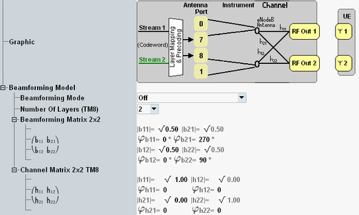

This section describes the node "Beamforming Model" for transmission mode 8.

Enables or disables beamforming.
"Off" | Beamforming is disabled. Not allowed for TM 8 plus "Follow..." scheduling types. |
"On" | Beamforming is enabled. The configured beamforming matrix is used. Not allowed for TM 8 plus "Follow..." scheduling types |
"TS 36.521 Beamforming Mode" | Beamforming is enabled. The beamforming matrix is selected randomly as defined in 3GPP TS 36.521, annex B.4.1 and B.4.2. Not allowed for 1x1 beamforming matrices and for "Follow..." scheduling types. |
"Precoding Matrix" | Beamforming is enabled. A precoding matrix is used as beamforming matrix. The matrix is selected via the parameter "Precoding Matrix". For "Follow...PMI..." scheduling types, the beamforming matrix is the precoding matrix corresponding to the PMI reported by the UE. |
You can select between one layer (single-layer beamforming) and two layers (dual-layer beamforming).
Remote command:Selects a precoding matrix to be used as beamforming matrix. Only relevant for beamforming mode "Precoding Matrix".
The meaning of the PMI values is defined in 3GPP TS 36.213, section 7.2.4.
Remote command:This section defines the beamforming matrix for the beamforming mode "On".
The matrix characterizes the mapping of the UE-specific antenna ports 7 and 8 to the transmit antennas, see "Beamforming Matrix".
Each element of the matrix is a complex number, defined via its phase and its magnitude. The size of the matrix is dynamic:
- 1x2 matrix (b11 and b21) for single-layer beamforming.
You can configure the phase of both coefficients. - 2x2 matrix (b11 to b22) for dual-layer beamforming.
You can configure the phase of each coefficient and the square of the magnitude of b11 and b12. The other magnitudes are adapted automatically.
The channel matrix is configurable for scenarios without fading. It defines the radio channel coefficients, see "Radio Channel Coefficients for MIMO".
Each element of the matrix is a complex number, defined via its phase and its magnitude.
You can configure the phase of each number and the square of the magnitude of h11 and h21. The other magnitudes are adapted automatically.
Remote command: